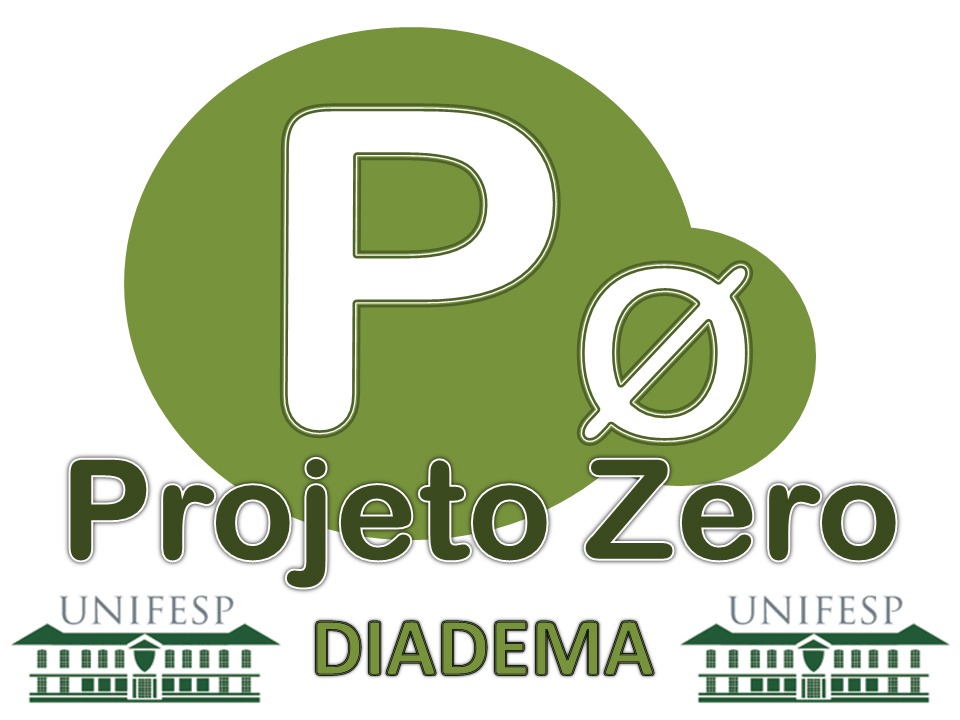

O LETRAMENTO DIGITAL NA PRÁTICA PEDAGÓGICA: APOIO À FORMAÇÃO CONTINUADA
PLANPLAR. Aplicativo para elaboração do Plano Escolar Participativo, 2016. Disponível em: https://www.fe.unicamp.br/lage/planpar.html. Acesso em 2 de abr. 2017.
LOPES, R. D.; FICHEMAN, I. K.; MARTINAZZO, A. A. G.; CORREA, A. G. D.; VENÂNCIO, V.; YIN, H. T.; BIAZON, L. C. O uso do computador e da internet na escola pública, 2016. Disponível em: http://www.fvc.org.br/estudos-e-pesquisas/avulsas/estudos1-7-uso-computadores.shtml. Acesso em: 05 jun. 2016.
INTERNET LIVE STATS. Internet Users, 2016. Disponível em: http://www.internetlivestats.com/internet-users. Acesso em 20 jun. 2016.
"[...] um tipo de pesquisa social com base empírica que é concebida e realizada com estreita associação com uma ação ou com a resolução de um problema coletivo, no qual os pesquisadores e participantes representativos da situação ou do problema estão envolvidos de modo cooperativo e participativo."
THIOLLENT, M. Metodologia da Pesquisa-Ação. 13. ed. São Paulo: Cortez, 2004.
VOSGERAU, Dilmeire S. R. A pesquisa ação-formação como instrumento de formação em serviço para integração das TIC na prática pedagógica do professo. Revista Brasileira de Pesquisa sobre Formação de Professores. Volume 04 n. 07 jul.-dez. 2012
MARQUES, J. E. JOSÉ. D. O. NETO, MARQUES, Emília M. R. Medindo a proficiência digital: uma abordagem simples usando um instrumento on-line. 2013. Disponível em: www.abed.org.br/congresso2013/cd/231.pdf Acesso em: 26 nov. 2016.
BUNZ, U. The Computer-Email-web (CEW) fluency scale - Development and validation. International Journal of Human-Computer Interaction, v. 17, n. 4, p. 479- 506, 2004. ISSN 1044-7318. Disponível em: Go to ISI>://WOS:000226943200003.
VOSGERAU, Dilmeire S. R. A pesquisa ação-formação como instrumento de formação em serviço para integração das TIC na prática pedagógica do professo. Revista Brasileira de Pesquisa sobre Formação de Professores. Volume 04 n. 07 jul.-dez. 2012
MARQUES, J. E. JOSÉ. D. O. NETO, MARQUES, Emília M. R. Medindo a proficiência digital: uma abordagem simples usando um instrumento on-line. 2013. Disponível em: www.abed.org.br/congresso2013/cd/231.pdf Acesso em: 26 nov. 2016.